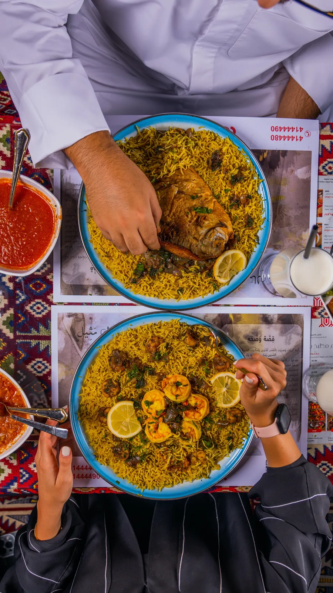
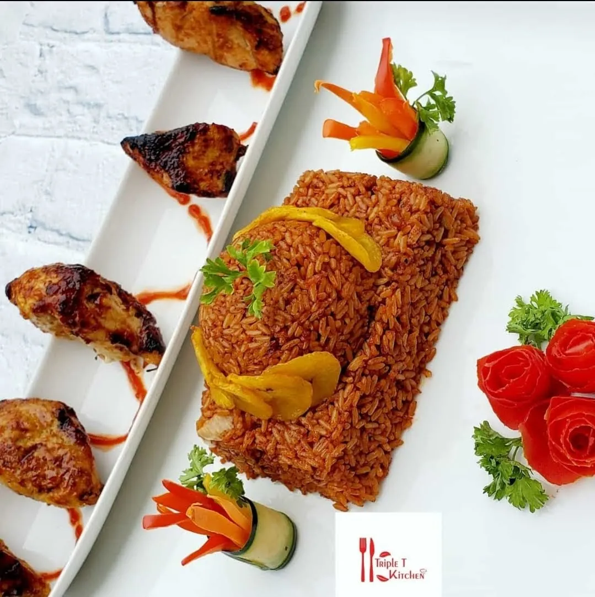
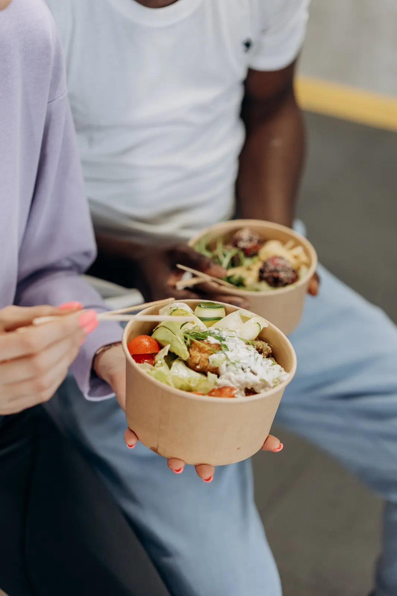

Ideas & Industry Voice
Better questions about food.
Food is changing quickly, but the most useful conversations still begin with better questions. What makes an experience memorable? What earns and keeps consumer trust? What helps a founder grow without weakening the business behind the brand? Through articles, commentary, speaking and media, I examine the forces shaping food and hospitality and make the bigger picture easier to see.
The latest.
Commentary and stories on food, law, culture and business.

CultureDebunking Common African Food Myths
Read article →
CultureCelebrating World Jollof Rice Day with a Twist: Reflecting on the TFL Jollof Concert
Read article →Food LawBeyond Poutine: 25 Canadian Food Laws That Will Surprise You
Read article →
IndustryConnecting African Cuisine to the World: Lessons from Thai and Chinese Culinary Integration
Read article →
Speaking & Media
Bring the TFL perspective to your audience.
I contribute a distinctive perspective on food, law, culture, business and consumer experience. Invite me to speak, contribute to a story, join a conversation or collaborate on work that makes food matter more.
- Speaking: keynotes, panels and workshops on food, law, culture and business growth.
- Media: interviews, commentary and expert contributions.
- Collaborations: aligned projects, campaigns and content partnerships.